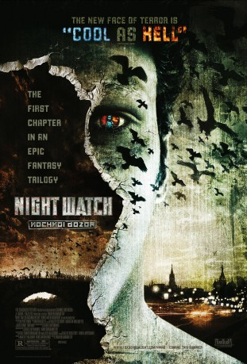
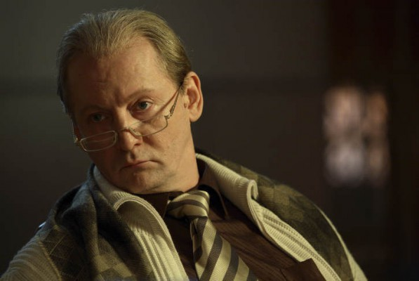
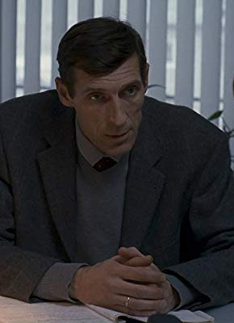

#3061 Wächter der Nacht - Nochnoi Dozor
Alternativ: Night Watch (Englischer Titel)
 
 IMDB-Wertung: 6.5 / 10
IMDB-Wertung: 6.5 / 10  Metascore: 58
Metascore: 58 
Der Vampir Anton versucht als Mitglied der Magier-Nachtwache in Moskau den fragilen Waffenstillstand zwischen den Hütern des Lichts und den Kräften der Finsternis aufrecht zu erhalten. Eines Tages aber scheint sich eine uralte Prophezeiung zu erfüllen und es taucht ein kleiner Junge auf, der diesen labilen Frieden aufzuheben und die Welt ins Verderben zu stürzen droht. Anton und seine Kollegen haben alle Hände voll zu tun, den verlustreichen Krieg mit Vampiren, Formwandlern und anderen üblen Gesellen abzuwenden.
Jahr: 2004
Dauer: 114 Minuten
FSK: 16
Land: Russland Studio: 20th Century Fox of GermanyTonspuren: DD5.1 - ,
Untertitel: Deutsch,
Auflösung: 1080p (1920x1040) Größe: 9195 MB
Genre: Action, Thriller, Fantasy
Regisseur: Timur Bekmambetov
Drehbuch: Timur Bekmambetov, Laeta Kalogridis, Sergey Lukyanenko
Soundtrack: Yuriy Poteenko
Darsteller:
 Konstantin Khabenskiy als Anton
Konstantin Khabenskiy als Anton- Ilya Lagutenko als Andrey
-  Viktor Verzhbitskiy als Zavulon
- Dmitriy Martynov als Egor
- Anna Slyu als Tigryonok
 Yuri Lowenthal als Kostya
Yuri Lowenthal als Kostya- Darian Weiss als Egor
- Vladimir Menshov als Geser
 Valeriy Zolotukhin als Otets Kosti
Valeriy Zolotukhin als Otets Kosti- Mariya Poroshina als Svetlana
- Galina Tyunina als Olga
- Yuriy Kutsenko als Ignat
 Aleksey Chadov als Kostya
Aleksey Chadov als Kostya- Zhanna Friske als Alisa
- Rimma Markova als Koldunya Darya
- Mariya Mironova als Mat Egora
- Aleksey Maklakov als Semyon
 Aleksandr Samoylenko als Medved
Aleksandr Samoylenko als Medved- Anna Dubrovskaya als Vampirsha
- Sergey Prikhodko als Pyotr
-  Igor Savochkin als Maksim Ivanovich
- Georgiy Dronov als Tolik
- Nikolay Olyalin als Inkvizitor
- Dmitriy Klokov als
- Dmitriy Osetrov als Militsioner u vykhoda iz metro
- Konstantin Murzenko als Paren v metro
- Anatoliy Gorin als Rabotnik TETs
- Lyudmila Yaronova als
- Aleksandr Shchurok als
- Nikolay Kiselev als
- Marina Ivanova als
- Viktor Ivanov als
- Polina Shchurok als
- Tatyana Shchankina als Suevernaya passazhirka v samolete
- Aleksandr Kozlov als Muzh suevernoy passazhirki
- Igor Pismennyy als Passazhir samoleta
- Viktoriya Smirnova als
- Sergey Kalashnikov als
- Ekaterina Malikova als Styuardessa samoleta
- Vladislav Anufriev als
- Yuriy Yakovlev als Malchik
- Ivan Popov als
- Aleksey Kurochkin als
- Yaroslav Romashenko als
- Blestyashchie als Gerl-gruppa Alisy , uncredited
- Igor Gasparyan als Voditel-kavkazets , uncredited
- Yuliya Kovalchuk als Solistka gerl-gruppy Alisy , uncredited
- Igor Lifanov als Presledovatel , uncredited
- Oleg Mokshantsev als Pokupatel v supermarkete , uncredited
- Aleksandra Nazarova als Mat Svetlany / Starushka na plyonke , uncredited
Datei: X:\2-Dilogie(N-Z)\Wächter der Nacht, des Tages\Wächter der Nacht - Nochnoi Dozor (2004, FSK16, 1920x1040).mkv seit 20.01.2016
Festplatte: HD Collection-2(A-Z)-3(A-M)
 Alle Filme aus Gruppe '2-Dilogie(N-Z)\Wächter der Nacht, des Tages'
Alle Filme aus Gruppe '2-Dilogie(N-Z)\Wächter der Nacht, des Tages'